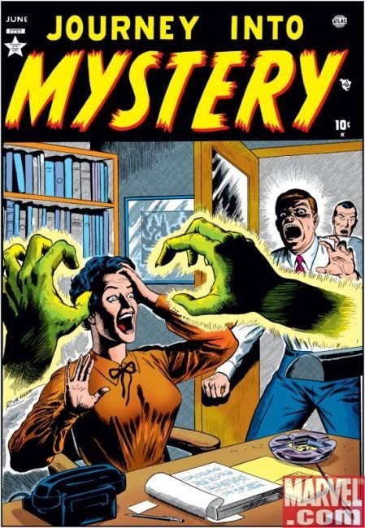

Journey Into Mystery

Cover by Russ Heath
- "One Foot In the Grave," art by Tony DiPreta;
A man decides to make money by reselling flowers stolen from graves until the dead return to take their flowers back.
- "Death Finds A Way!" text story.
"The Clutching Hands," script by Carl Wessler, art by Cal Massey; A writer murders another writer to steal his work, but the dead writer's hands continue to make trouble for him.
- "Haunted!" art by Vic Carrabotta; A ghost scares off potential buyers of a derelict house.
- "It Can't Miss," art by Jay Scott Pike; An accomplice to an escaped con kills a man who looks like his buddy so that the cops will find the body and think the escaped prisoner is dead while he assumes the dead man's identity.
- "Iron-Head," art by Dick Ayers; Bronson is a grave robber and a murderer. To avoid being captured by the authorities, he accepts a job as a deep-sea diver on a private yacht.